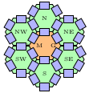

Kalimános BT
- English
- Oktatás/Hallgatóknak
- Kutatás
- Közlemények
- Publikációk és idézettség
- ORCID
- publons
- MTMT
- Google Scholar
- ResearchGate https://www.researchgate.net/profile/Janos_Vegh
- Azonosítók
- DSc
- Személyes
- Látogató statisztikák
-

Ezek az anyagok a Creative Commons Nevezd meg! - Ne add el! 4.0 Nemzetközi Licenc feltételeinek megfelelően felhasználhatók.